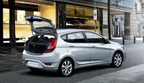

Хетчбек (англ. hatchback від hatch — «люк» і back — «ззаду») — це конфігурація кузова автомобіля із задніми дверима, які відкриваються вгору, щоб забезпечити доступ до основного салону автомобіля як до вантажного відділення, а не просто до окремого багажника.. Хетчбеки можуть мати відкидні сидіння другого ряду, де інтер’єр можна змінити, щоб визначити пріоритет пасажирського або вантажного об’єму.
Відмінною рисою хетчбека є задні двері, які відкриваються вгору і кріпляться на петлях на рівні даху (на відміну від кришки багажника/багажника салону/седана, яка кріпиться нижче заднього скла). Задні сидіння часто можна скласти, щоб збільшити доступну вантажну площу. Хетчбеки можуть мати знімну жорстку полицю або гнучкий складний чохол для багажного відділення за задніми сидіннями.